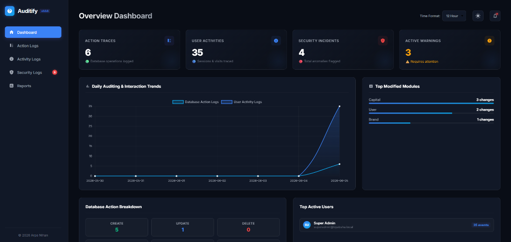

Decoupled Audit Logging & Threat Shield for Laravel
Scale logging seamlessly with zero database write congestion. Auditify separates logs into three specialized tables, guards against XSS injection, and exposes a real-time server threat engine.

Why Choose Auditify?
Unlike basic text logging files, Auditify acts as a decoupled structured database layer and active firewall for Laravel applications.
Decoupled Modules
Splits action audits, route logs, and security logs into three dedicated tables. Avoids massive indexing lags and optimizes database read/write processes.
Real-Time Threat Engine
Tracks application model updates, mass delete executions, failed logins, and changes on sensitive configs. Triggers critical audit entries automatically.
XSS Attack Shield
Scans incoming URL requests, GET/POST forms, and controller variables automatically. Blocks attacks immediately with a clean HTTP 403 response.
Client-Side Event API
Exposes a dedicated client endpoint to log javascript-based activities like button clicks, video plays, and file downloads directly.
Authorization Gate
Safely guard the UI interface dashboard with customizable closure middleware gates. Restrict pages to super-admins or developer groups.
Pruning Schedules
Keep database tables lightweight and fast. Automatic scheduling parameters prune logs older than N days automatically.
System Requirements
Auditify is optimized for modern Laravel ecosystems. See version compatibility mappings below:
| Laravel Version | Compatible PHP Versions |
|---|---|
| Laravel 13.x | PHP 8.3 – 8.4 |
| Laravel 11.x, 12.x | PHP 8.2 – 8.4 |
| Laravel 10.x | PHP 8.2 – 8.3 |
Decoupled Log Database Architecture
Auditify separates table columns cleanly to scale as your write load increases.
<?php
namespace Auditify\Models;
use Illuminate\Database\Eloquent\Model;
class ActionLog extends Model
{
protected $table = 'audit_action_logs';
protected $casts = [
'old_values' => 'json',
'new_values' => 'json',
];
}Live Auditify Sandbox Playground
Trigger actions in the sandbox panel below and watch how the Auditify core engine parses, filters, and records them to the correct tables.
✏️ Model Auditing
Modifying a database Eloquent model triggers an Action Log containing JSON values comparison.
🖱️ Client-Side Event API
Simulate sending client-side events (such as button clicks or PDF downloads) directly to the API endpoint.
⚠️ Real-Time Threat Engine
Rapid model deletes trigger the Mass Delete Security alert. Click the delete button rapidly 5 times.
🛡️ XSS Firewall Scanning
Auditify scans fields. Try pasting a script tag such as <script>alert(1)</script> to test the block action.
Log Browser Events Directly
Standard backend logs can't track what happens in the browser. Auditify provides a built-in API endpoint at /auditify/api/events so you can dispatch event payloads directly from your SPA or vanilla JS scripts, automatically associating events with the user's active session.
Perfect for monitoring PDF downloads, plan upgrades, checkout initiations, or interactive elements with CSRF validation.
Manual Triggers & Helpers
Leverage the Auditify facade to log specific business intents (like PDF downloads, password reset requests) that basic database CRUD tracking misses, or to disable auditing during heavy seeder runs to prevent write congestion.
withoutAuditing() to prevent database locks.
Interactive Configuration & Setup
Customize setting variables in the options control panel and view the configuration block code build automatically.
Quick Installation Steps
Add Auditify to your PHP Laravel project in less than 3 minutes.
Composer Require Package
Require the package inside your Laravel project root using composer package manager.
composer require arpanihan/auditify
Run The Installer Command
Automatically copy database migration files, publish assets, and compile setup models configuration files.
php artisan auditify:install
Access the Dashboard
Once the installer completes successfully, open your web browser and navigate to the Auditify dashboard URL:
http://your-domain.local/auditify
(Optional) Selective Model Auditing
By default, Auditify automatically audits all Eloquent models globally without any setup. If you disable global auditing ('auto_audit_models' => false) in config/auditify.php and prefer to manually select which models to audit, add the Auditable trait:
<?php
namespace App\Models;
use Illuminate\Database\Eloquent\Model;
use Auditify\Traits\Auditable;
class Product extends Model
{
use Auditable; // Audits changes in this model selectively
}Routes & Endpoints Reference
All controller routes register automatically under your configured prefix with target authorization middleware gates.
| Method | URI Path | Controller Action | Description |
|---|---|---|---|
| GET | /auditify | DashboardController@index | Main logs dashboard index |
| GET | /auditify/action-logs | ActionLogController@index | View list of database action logs |
| GET | /auditify/action-logs/{id} | ActionLogController@show | View details with side-by-side attributes difference |
| GET | /auditify/action-logs/export/csv | ActionLogController@exportCsv | Export action logs in CSV format |
| GET | /auditify/action-logs/export/excel | ActionLogController@exportExcel | Export action logs in Excel format |
| GET | /auditify/action-logs/export/pdf | ActionLogController@exportPdf | Export action logs in PDF format |
| GET | /auditify/activity-logs | ActivityLogController@index | View list of activity logs |
| GET | /auditify/activity-logs/export/csv | ActivityLogController@exportCsv | Export activity logs in CSV format |
| GET | /auditify/activity-logs/export/excel | ActivityLogController@exportExcel | Export activity logs in Excel format |
| GET | /auditify/activity-logs/export/pdf | ActivityLogController@exportPdf | Export activity logs in PDF format |
| GET | /auditify/security-logs | SecurityLogController@index | View list of security logs |
| GET | /auditify/security-logs/unread-check | SecurityLogController@checkUnreadAlerts | Live alert poll check |
| GET | /auditify/security-logs/{id} | SecurityLogController@show | View security log details |
| POST | /auditify/security-logs/{id}/read | SecurityLogController@markAsRead | Toggle log read state |
| GET | /auditify/security-logs/export/csv | SecurityLogController@exportCsv | Export security logs in CSV format |
| GET | /auditify/security-logs/export/excel | SecurityLogController@exportExcel | Export security logs in Excel format |
| GET | /auditify/security-logs/export/pdf | SecurityLogController@exportPdf | Export security logs in PDF format |
| POST | /auditify/api/events | ActivityLogController@storeFrontendEvent | Frontend client-side interaction logging |
| GET | /auditify/reports | ReportController@index | View detailed log analytics and reports |
Fully Tested Package
Auditify features a robust PHPUnit testing environment utilizing the Orchestra Testbench libraries. Test coverage covers model triggers, routes access validations, authentication filters, and pruning command scripts.
To run the standalone test suite on local:
$cd laravel-auditify && composer install
$./vendor/bin/phpunit